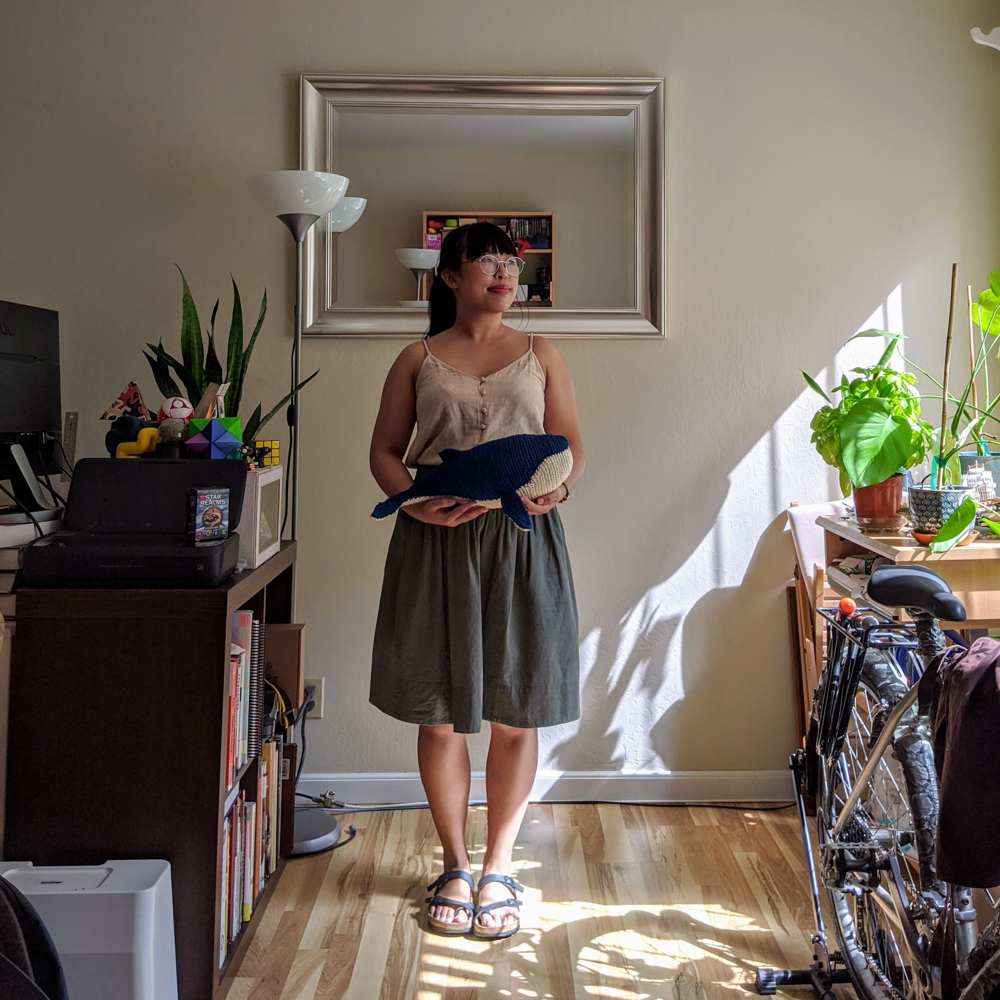

Hello!
Welcome to Stitch N Squish! I picked up amigurumi again in July 2020 during shelter-in-place to pass the time while I can't volunteer as an animal presenter at the local science museum or take as many drop-in dance classes. I'm slowly but steadily working through a bunch of patterns, and eventually I want to try designing some patterns too. I made this site to keep track of my finished projects in a cleaner state than my crochet instagram account, but I tend to spend more time over there. Come say hi! 😊
– Margaret
